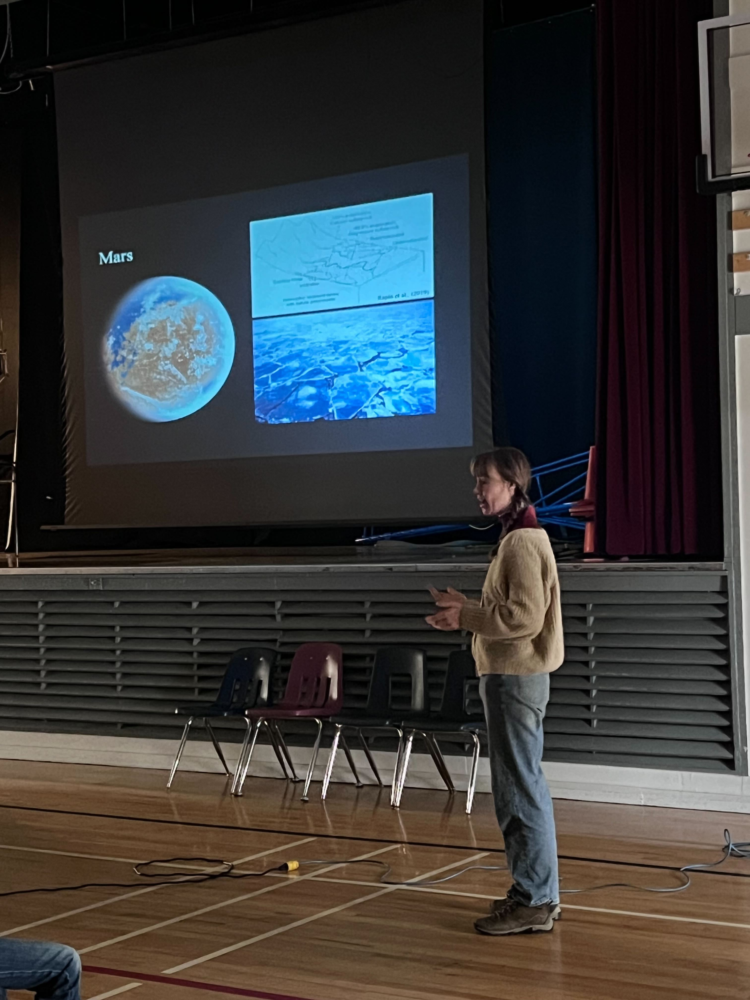
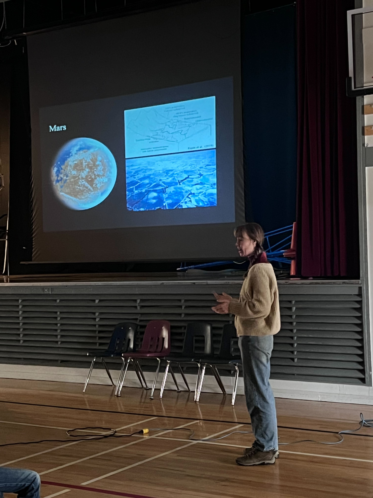

Back to Main
I love participating in the Atlanta Science Festival! In 2023, I helped crew the ExplOrigins booth, and had the opportunity to talk about the various scales of space. In 2024, I set up a spectroscopy game to teach kids about how scientists learn information from “squiggly lines”. Fingers crossed for a new generation of spectroscopists!!
I recently presented on the geologic history of Mars to high school students at David Stoddard School in Clinton, British Columbia, and also gave a spectroscopy demo. I was there with a multi-institutional team of researchers who described different aspects of remote sensing, astrobiology, and more! Students were very excited to see how different materials appear in visible and near infrared light!
I’ve also edited and expanded multiple Wikipedia articles. I’ve expanded the Wikipedia article for the Goldich Dissolution Series, which you can find here. I’ve also expanded the Habitability Requirements section of the Terraforming Wikipedia page, which you can find here.
I’m a contributor to the Life Detection Knowledge Base: a repository for information about evidence for, and against, detections of signs of life. Find my work here.
In summer 2023 I had the wonderful opportunity to travel to Sri Lanka for field research on serpentine deposits. We made it on local TV! Find the YouTube video capturing our work here. While traveling I also had the lovely chance to talk to students at a local village school in Ginigalpelessa about studying Mars and x-ray fluorescence spectroscopy.
 
